Your club's books, sorted. De administratie van je club, geregeld.
Verenigd keeps members, membership fees and a complete double-entry bookkeeping together in one calm Windows app. Collect fees by SEPA direct debit, read in your bank statements, make the budget and the annual report, and let your group leaders look up their own members on their phones. Verenigd houdt leden, contributie en een complete dubbele boekhouding bij elkaar in één rustige Windows-app. Incasseer de contributie met SEPA, lees je bankafschriften in, maak de begroting en het jaarverslag, en laat de leiding hun eigen leden opzoeken op de telefoon.
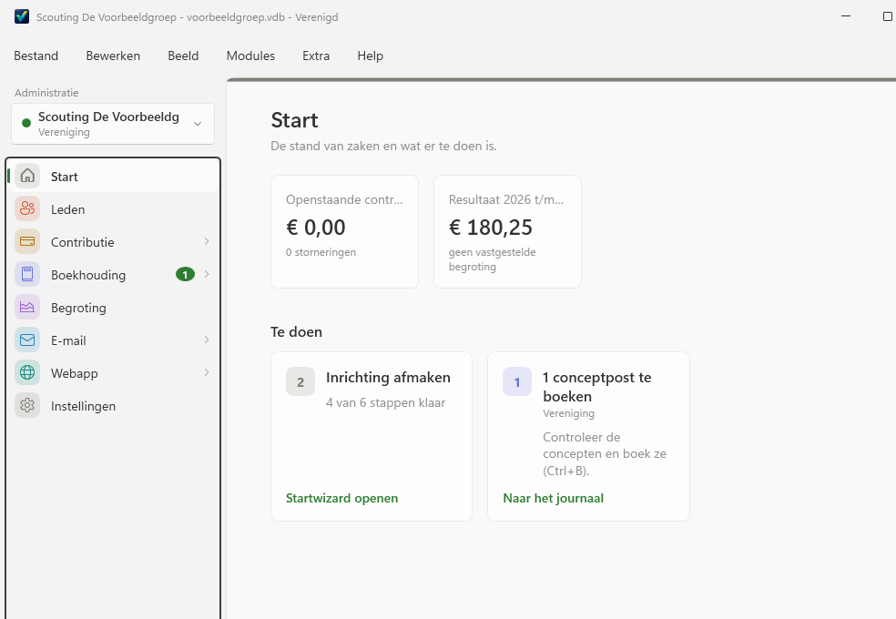
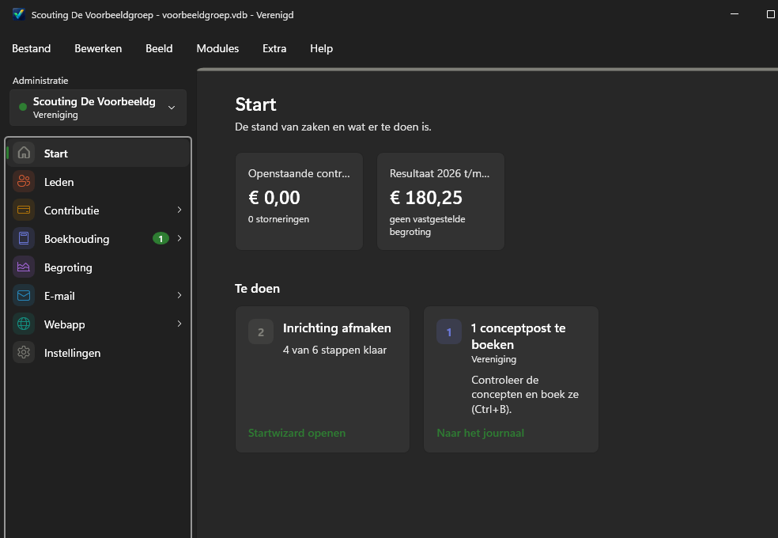
Beta: almost thereBèta: bijna klaar
Verenigd is in daily use, and the final version follows soon. Until then you may still meet rough edges. Make a backup now and then (File › Backup), and please report what you find.Verenigd wordt al dagelijks gebruikt, en de definitieve versie volgt binnenkort. Tot die tijd kun je nog ruwe randjes tegenkomen. Maak af en toe een back-up (Bestand › Back-up maken), en meld gerust wat je tegenkomt.
Made for scouting, for nowVoorlopig voor scouting
Verenigd will grow into a general bookkeeping program for clubs and foundations. For now it is built around scouting: it imports members from Scouting Nederland's SOL3, and it knows age sections such as Beavers, Cubs and Scouts.Op termijn wordt Verenigd een algemeen boekhoudprogramma voor verenigingen en stichtingen. Voorlopig is het gemaakt voor scouting: het leest leden in uit SOL3 van Scouting Nederland en kent speltakken zoals Bevers, Welpen en Scouts.
What it doesWat het doet
Everything the treasurer does.
In one place.
Alles wat de penningmeester doet.
Op één plek.
A native Windows app with the look of Windows 11, light and dark. Your data stays on your own PC, in one encrypted file. Een echte Windows-app met de uitstraling van Windows 11, licht en donker. Je gegevens blijven op je eigen pc, in één versleuteld bestand.
Members from SOL3Leden uit SOL3
Import four SOL3 exports with a preview first. Guardians, roles and sections are recognised; new members get a welcome e-mail if you like.Lees vier SOL3-exports in, met eerst een voorbeeld. Voogden, functies en speltakken worden herkend; nieuwe leden krijgen desgewenst een welkomstmail.
Fees by SEPA direct debitContributie met SEPA-incasso
A monthly collection run per payer, missed months included, as a pain.008 file for your bank. Returned debits stay visible until they are paid.Elke maand een incassorun per betaler, gemiste maanden inbegrepen, als pain.008-bestand voor je bank. Storneringen blijven in beeld tot ze betaald zijn.
Real double-entry bookkeepingEchte dubbele boekhouding
Chart of accounts, journal, ledger, balance sheet and profit & loss, with a ready-made chart for scouting groups and a plain-language "Simple" view.Rekeningschema, journaal, grootboek, balans en winst- en verliesrekening, met een kant-en-klaar schema voor scoutinggroepen en een weergave "Eenvoudig" in gewone taal.
Bank statements in, bookedBankafschriften erin, geboekt
Read CAMT.053 files from your bank. Rules you make once book recurring transactions for you; you only check and confirm.Lees CAMT.053-bestanden van je bank in. Regels die je één keer maakt boeken terugkerende transacties voor je; jij controleert en bevestigt.
Receipts and invoicesBonnen en facturen
Drop receipts in the inbox and Verenigd suggests the matching transaction. Send invoices as PDF with a payment QR code, by Gmail.Zet bonnen in het postvak en Verenigd stelt de passende boeking voor. Verstuur facturen als pdf met een betaal-QR-code, via Gmail.
Budget and long-term planBegroting en meerjarenplan
A yearly budget for the club, compared with reality as you go, and a ten-year plan for the foundation that owns the building.Een jaarbegroting voor de vereniging, onderweg vergeleken met de werkelijkheid, en een tienjarenplan voor de stichting met het gebouw.
A web app for the leadersEen webapp voor de leiding
Leaders see the members of their own section on their phone, call a parent in one tap, and suggest changes that you approve. No financial data ever leaves your PC.De leiding ziet de leden van de eigen speltak op de telefoon, belt een ouder met één tik en stelt wijzigingen voor die jij goedkeurt. Financiële gegevens gaan nooit van je pc af.
Private by designPrivacy vanaf het begin
One password-protected, encrypted database with a recovery key, made for the GDPR: children's data and bank accounts are kept safe.Eén versleutelde database met wachtwoord en herstelsleutel, gemaakt met de AVG in gedachten: gegevens van kinderen en rekeningnummers blijven veilig.
Club and foundationVereniging en stichting
Two separate administrations in one app, each with its own books, bank accounts and colour. Switch with one click.Twee aparte administraties in één app, elk met een eigen boekhouding, eigen bankrekeningen en een eigen kleur. Wisselen met één klik.
Take a lookKijk even rond
Calm screens. One clear next step.Rustige schermen. Steeds één duidelijke volgende stap.
All screenshots come from a demo group with made-up members and amounts. Switch the theme at the top right to see dark mode. Alle schermafbeeldingen komen uit een demogroep met verzonnen leden en bedragen. Wissel rechtsboven van thema om de donkere modus te zien.
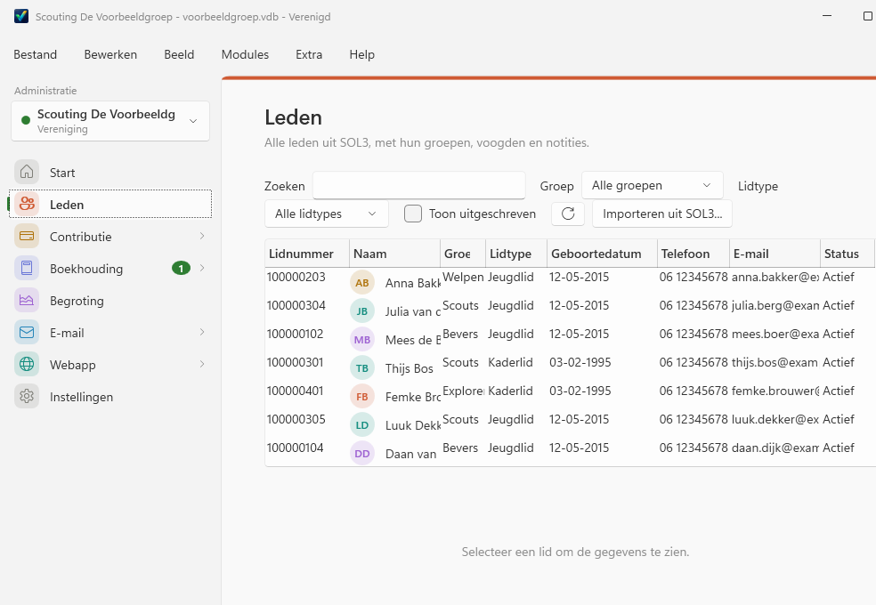
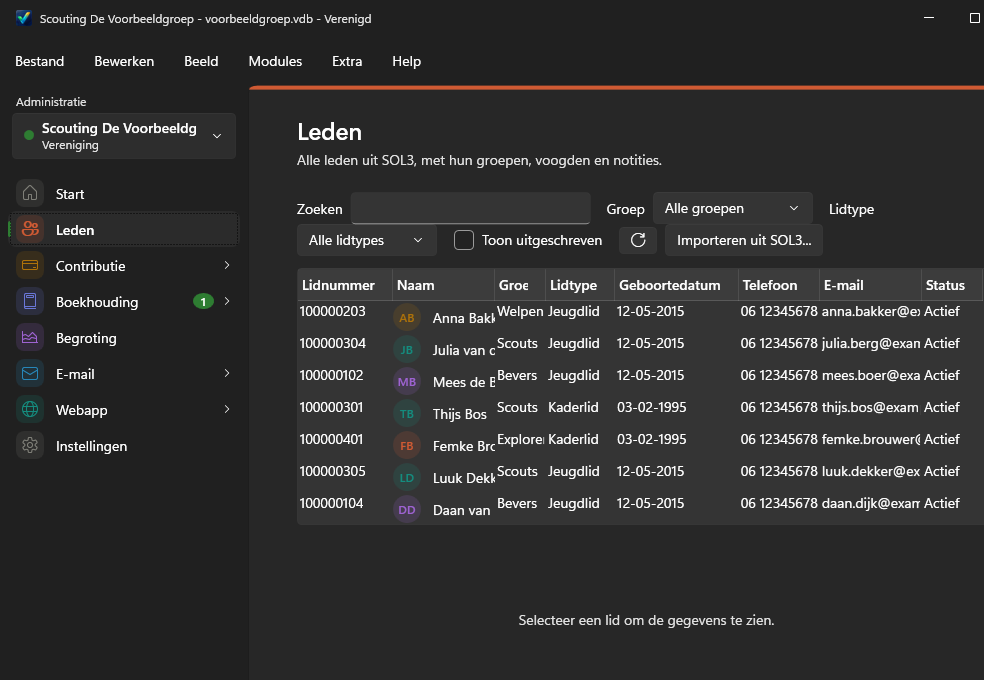
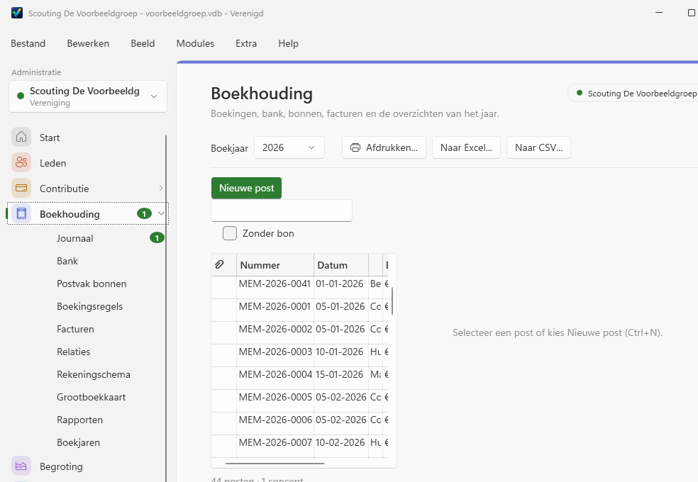
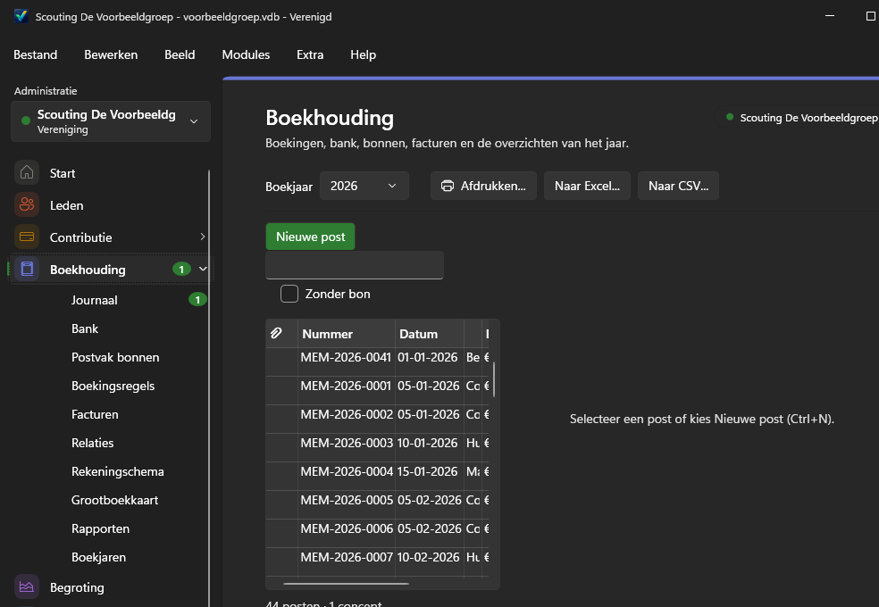
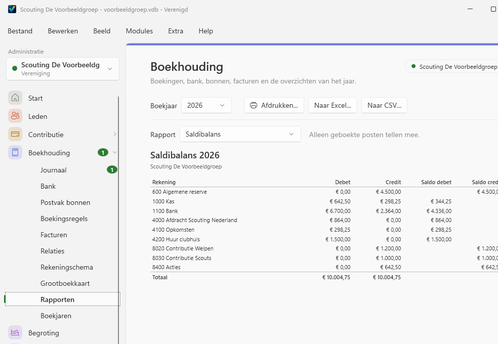
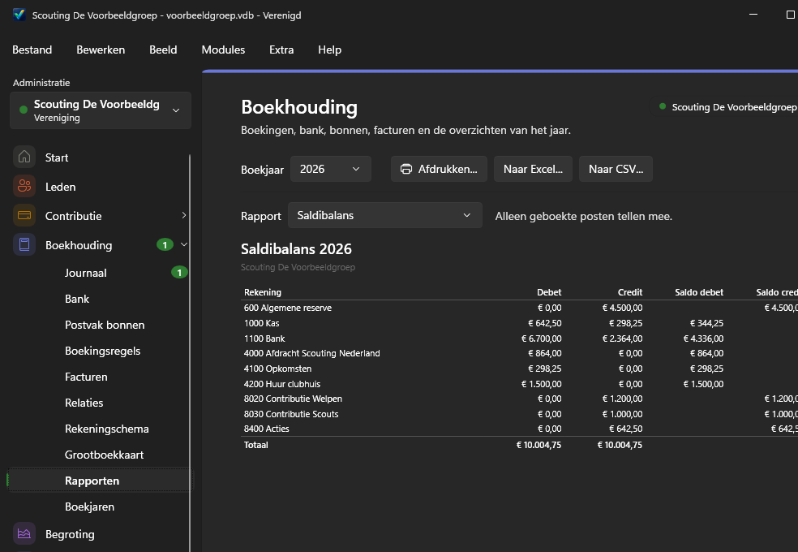
And on the leaders' phonesEn op de telefoon van de leiding
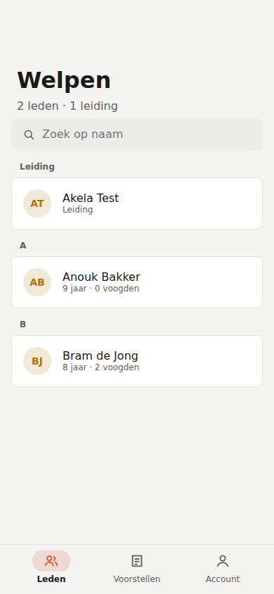
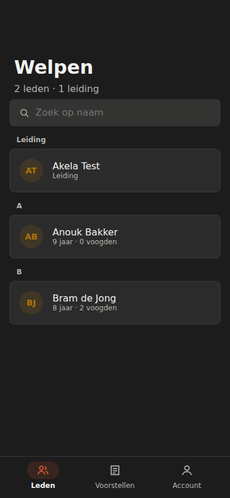
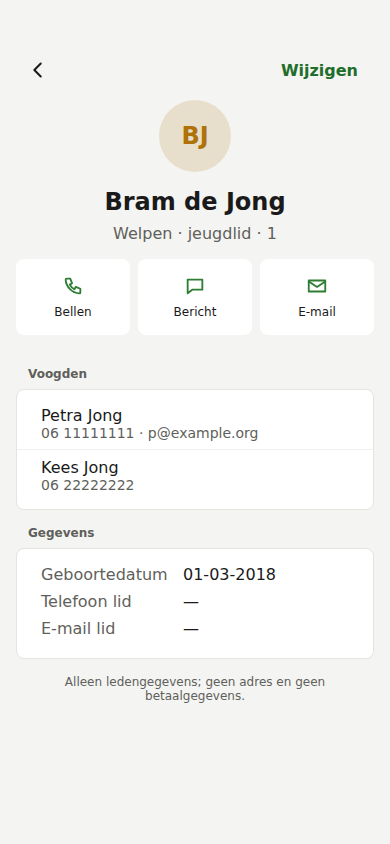
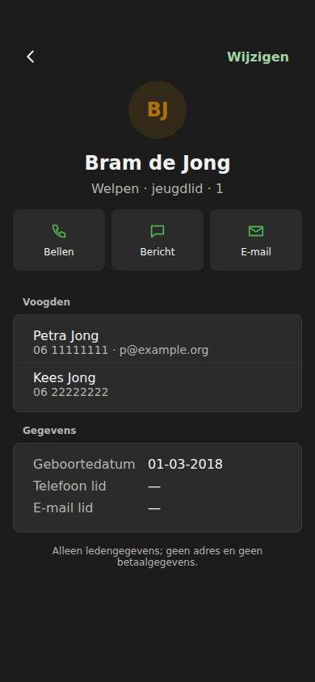
Try itProbeer het
Get the beta.Haal de bèta.
For Windows 10 and 11 (64-bit). The installer contains everything, including .NET; no other downloads needed. Updating works the same way: install the new version over the old one, your data stays where it is. Voor Windows 10 en 11 (64-bit). Het installatiebestand bevat alles, ook .NET; je hoeft niets anders te downloaden. Bijwerken gaat op dezelfde manier: installeer de nieuwe versie over de oude heen, je gegevens blijven staan.
"Windows protected your PC"?"Windows heeft uw pc beschermd"?
The beta is not code-signed yet, so Windows SmartScreen may warn about an unknown publisher the first time. That is expected:De bèta is nog niet digitaal ondertekend, daarom kan Windows SmartScreen de eerste keer waarschuwen voor een onbekende uitgever. Dat is verwacht:
- Click More info in the blue window.Klik in het blauwe venster op Meer informatie.
- Check that the file is
Verenigd.msi, then click Run anyway.Controleer dat het bestandVerenigd.msiheet en klik dan op Toch uitvoeren. - Your browser may also ask whether to keep the download: choose Keep.Ook je browser kan vragen of je de download wilt bewaren: kies Behouden.
Got questions?Vragen?
Frequently asked questions.Veelgestelde vragen.
Is it free?Is het gratis?
Yes. No licence fee, no subscription.Ja. Geen licentiekosten, geen abonnement.
Can my club use it if we are not a scouting group?Kan mijn club het gebruiken als we geen scoutinggroep zijn?
Not yet comfortably. The bookkeeping itself is general, but importing members depends on SOL3, the system of Scouting Nederland. A general version for other clubs and foundations is the plan for later.Nog niet prettig. De boekhouding zelf is algemeen, maar het inlezen van leden hangt af van SOL3, het systeem van Scouting Nederland. Een algemene versie voor andere verenigingen en stichtingen staat op de planning voor later.
Where is my data stored?Waar staan mijn gegevens?
On your own PC, in one encrypted database file with a password, next to a key file. A backup holds both. Only if you switch on the web app for the leaders does a copy of names, birth dates, phone numbers and e-mail addresses go to a server in the EU; addresses and anything financial never leave your PC.Op je eigen pc, in één versleuteld databasebestand met wachtwoord, met een sleutelbestand ernaast. Een back-up bevat beide. Alleen als je de webapp voor de leiding aanzet, gaat een kopie van namen, geboortedata, telefoonnummers en e-mailadressen naar een server in de EU; adressen en alles wat financieel is gaan nooit van je pc af.
Which banks are supported?Welke banken worden ondersteund?
Bank statements in CAMT.053 format, tested with Rabobank. Direct-debit files are pain.008.001.08, made for a Rabobank collection contract. ING follows after a test with a real ING file.Bankafschriften in CAMT.053-formaat, getest met de Rabobank. Incassobestanden zijn pain.008.001.08, gemaakt voor een incassocontract bij de Rabobank. ING volgt na een test met een echt ING-bestand.
Where is the web app for leaders?Waar is de webapp voor de leiding?
It lives at jeroengoudswaard.github.io/verenigd/app. The link with the server is not set up yet, so you can look at the login screen but not sign in. That follows soon.Die staat op jeroengoudswaard.github.io/verenigd/app. De koppeling met de server is nog niet ingericht, dus je ziet het inlogscherm maar kunt nog niet inloggen. Dat volgt binnenkort.
I forgot my password. Now what?Ik ben mijn wachtwoord vergeten. Wat nu?
When you create a database, Verenigd shows a recovery key once. Keep it somewhere safe: with it you can choose a new password. Without the password or the recovery key, nobody can open the data, not even the maker.Bij het aanmaken van een database toont Verenigd één keer een herstelsleutel. Bewaar die op een veilige plek: daarmee kies je een nieuw wachtwoord. Zonder wachtwoord of herstelsleutel kan niemand de gegevens openen, ook de maker niet.